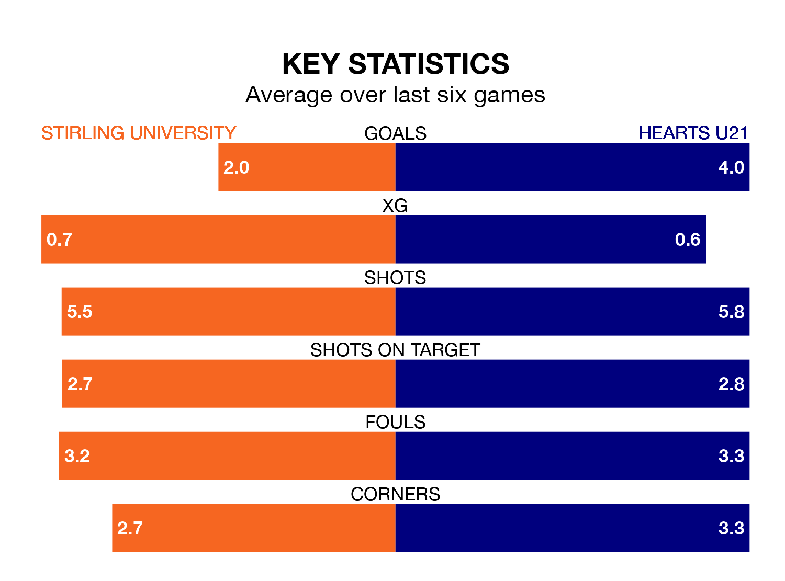

Hearts U21 travel to the Forthbank Stadium for Sunday's match against Stirling University looking to bounce back from defeat last time out in Lowland Football League.
Hearts, who sit third in the league after 23 games, fell to a 3-1 home defeat to Cumbernauld Colts on January 26.
They face a Stirling University side who also lost their last match, a 4-2 defeat to East Kilbride, and who sit 10th in the table.
With 67 goals in 23 games so far this season, Hearts U21 are the league's joint-highest scorers with 2.9 goals per game. And they are conceding fewer than average, letting in 28 goals at a rate of 1.2 per game.
Stirling University, meanwhile, are below average scorers, with 1.5 goals per game, compared to a league average of 1.7. They have conceded 1.4 goals per game.
The hosts are in mixed form in Lowland Football League, with two wins and two draws from their last six games.
With four wins and two losses over that period, Hearts's form is better – they have taken 12 points from 18, compared to Stirling University's eight.
In the last three years, Stirling University and Hearts U21 have played each other on three occasions. Stirling University won all of them.
Their last meeting was on November 3, when Stirling University won 1-0 away.
Updated: 09:21 (UTC), 30/01/24